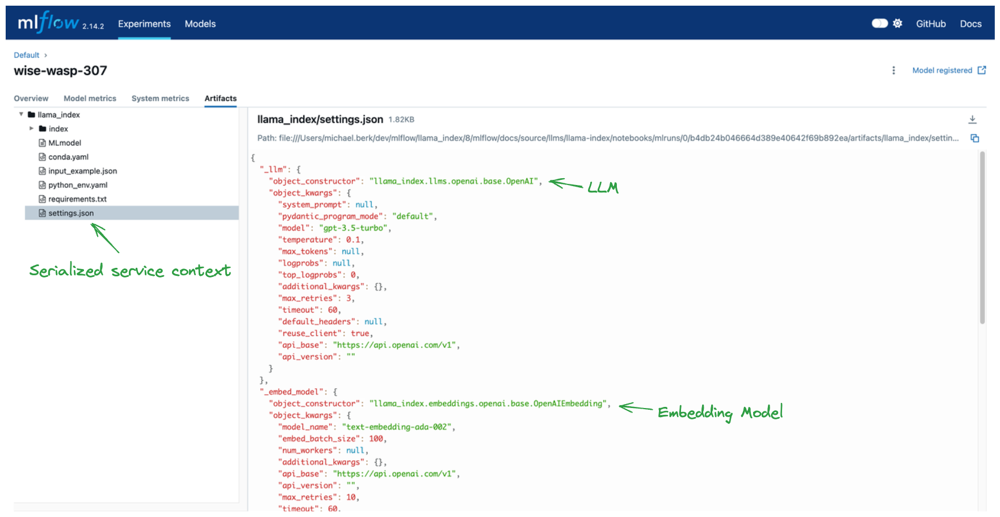
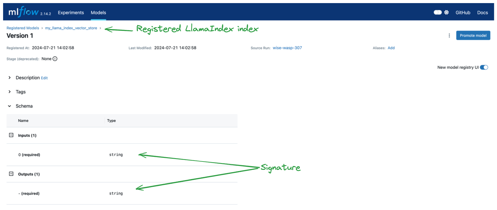
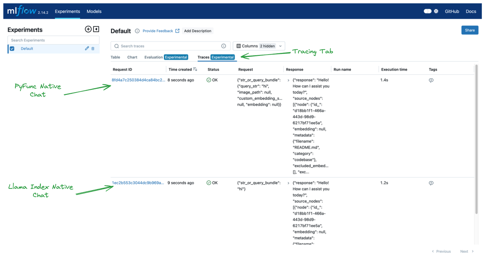
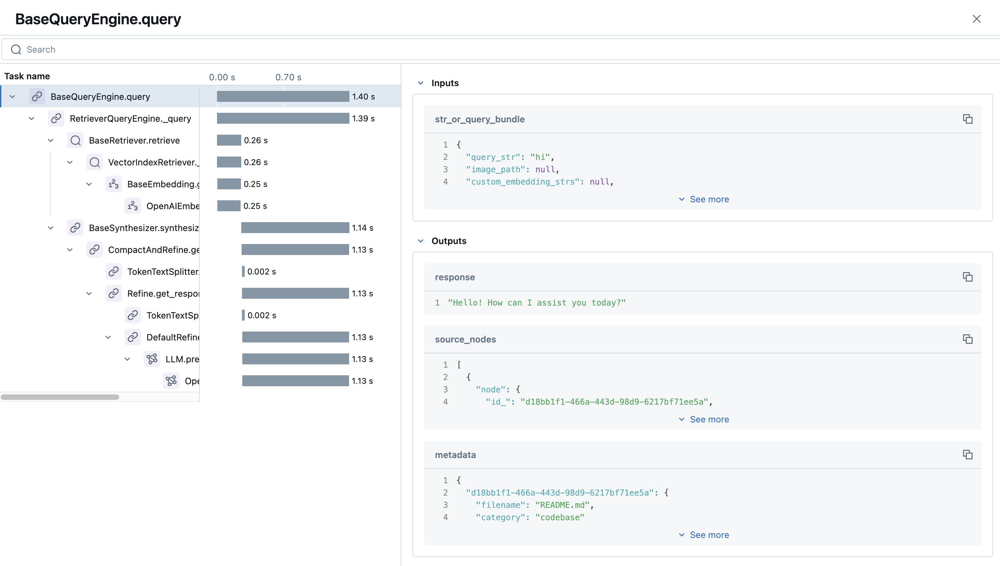

Introduction to Using LlamaIndex with MLflow
Welcome to this interactive tutorial designed to introduce you to LlamaIndex and its integration with MLflow. This tutorial is structured as a notebook to provide a hands-on, practical learning experience with the simplest and most core features of LlamaIndex.
Download this NotebookWhat you will learn
By the end of this tutorial you will have:
Created an MVP VectorStoreIndex in LlamaIndex.
Logged that index to the MLflow tracking server.
Registered that index to the MLflow model registry.
Loaded the model and performed inference.
Explored the MLflow UI to learn about logged artifacts.
These basics will familiarize you with the LlamaIndex user journey in MLlfow.
Setup
First, we must ensure we have the required dependecies and environment variables. By default, LlamaIndex uses OpenAI as the source for LLMs and embeding models, so we’ll do the same. Let’s start by installing the requisite libraries and providing an OpenAI API key.
[1]:
%pip install mlflow>=2.15 llama-index>=0.10.44 -q
Note: you may need to restart the kernel to use updated packages.
[2]:
import os
from getpass import getpass
from llama_index.core import Document, VectorStoreIndex
from llama_index.core.llms import ChatMessage
import mlflow
os.environ["OPENAI_API_KEY"] = getpass("Enter your OpenAI API key: ")
[21]:
assert "OPENAI_API_KEY" in os.environ, "Please set the OPENAI_API_KEY environment variable."
Create a Index
Vector store indexes are one of the core components in LlamaIndex. They contain embedding vectors of ingested document chunks (and sometimes the document chunks as well). These vectors enable various types of inference, such as query engines, chat engines, and retrievers, each serving different purposes in LlamaIndex.
Query Engine:
Usage: Perform straightforward queries to retrieve relevant information based on a user’s question.
Scenario: Ideal for fetching concise answers or documents matching specific queries, similar to a search engine.
Chat Engine:
Usage: Engage in conversational AI tasks that require maintaining context and history over multiple interactions.
Scenario: Suitable for interactive applications like customer support bots or virtual assistants, where conversation context is important.
Retriever:
Usage: Retrieve documents or text segments that are semantically similar to a given input.
Scenario: Useful in retrieval-augmented generation (RAG) systems to fetch relevant context or background information, enhancing the quality of generated responses in tasks like summarization or question answering.
By leveraging these different types of inference, LlamaIndex allows you to build robust AI applications tailored to various use cases, enhancing interaction between users and large language models.
[4]:
print("------------- Example Document used to Enrich LLM Context -------------")
llama_index_example_document = Document.example()
print(llama_index_example_document)
index = VectorStoreIndex.from_documents([llama_index_example_document])
print("\n------------- Example Query Engine -------------")
query_response = index.as_query_engine().query("What is llama_index?")
print(query_response)
print("\n------------- Example Chat Engine -------------")
chat_response = index.as_chat_engine().chat(
"What is llama_index?",
chat_history=[ChatMessage(role="system", content="You are an expert on RAG!")],
)
print(chat_response)
print("\n------------- Example Retriever -------------")
retriever_response = index.as_retriever().retrieve("What is llama_index?")
print(retriever_response)
------------- Example Document used to Enrich LLM Context -------------
Doc ID: e4c638ce-6757-482e-baed-096574550602
Text: Context LLMs are a phenomenal piece of technology for knowledge
generation and reasoning. They are pre-trained on large amounts of
publicly available data. How do we best augment LLMs with our own
private data? We need a comprehensive toolkit to help perform this
data augmentation for LLMs. Proposed Solution That's where LlamaIndex
comes in. Ll...
------------- Example Query Engine -------------
LlamaIndex is a "data framework" designed to assist in building LLM apps by offering tools such as data connectors for various data sources, ways to structure data for easy use with LLMs, an advanced retrieval/query interface, and integrations with different application frameworks. It caters to both beginner and advanced users, providing a high-level API for simple data ingestion and querying, as well as lower-level APIs for customization and extension of different modules to suit individual needs.
------------- Example Chat Engine -------------
LlamaIndex is a data framework designed to assist in building LLM apps by providing tools such as data connectors for various data sources, ways to structure data for easy use with LLMs, an advanced retrieval/query interface, and integrations with different application frameworks. It caters to both beginner and advanced users with a high-level API for easy data ingestion and querying, as well as lower-level APIs for customization and extension of different modules to suit specific needs.
------------- Example Retriever -------------
[NodeWithScore(node=TextNode(id_='d18bb1f1-466a-443d-98d9-6217bf71ee5a', embedding=None, metadata={'filename': 'README.md', 'category': 'codebase'}, excluded_embed_metadata_keys=[], excluded_llm_metadata_keys=[], relationships={<NodeRelationship.SOURCE: '1'>: RelatedNodeInfo(node_id='e4c638ce-6757-482e-baed-096574550602', node_type=<ObjectType.DOCUMENT: '4'>, metadata={'filename': 'README.md', 'category': 'codebase'}, hash='3183371414f6a23e9a61e11b45ec45f808b148f9973166cfed62226e3505eb05')}, text='Context\nLLMs are a phenomenal piece of technology for knowledge generation and reasoning.\nThey are pre-trained on large amounts of publicly available data.\nHow do we best augment LLMs with our own private data?\nWe need a comprehensive toolkit to help perform this data augmentation for LLMs.\n\nProposed Solution\nThat\'s where LlamaIndex comes in. LlamaIndex is a "data framework" to help\nyou build LLM apps. It provides the following tools:\n\nOffers data connectors to ingest your existing data sources and data formats\n(APIs, PDFs, docs, SQL, etc.)\nProvides ways to structure your data (indices, graphs) so that this data can be\neasily used with LLMs.\nProvides an advanced retrieval/query interface over your data:\nFeed in any LLM input prompt, get back retrieved context and knowledge-augmented output.\nAllows easy integrations with your outer application framework\n(e.g. with LangChain, Flask, Docker, ChatGPT, anything else).\nLlamaIndex provides tools for both beginner users and advanced users.\nOur high-level API allows beginner users to use LlamaIndex to ingest and\nquery their data in 5 lines of code. Our lower-level APIs allow advanced users to\ncustomize and extend any module (data connectors, indices, retrievers, query engines,\nreranking modules), to fit their needs.', mimetype='text/plain', start_char_idx=1, end_char_idx=1279, text_template='{metadata_str}\n\n{content}', metadata_template='{key}: {value}', metadata_seperator='\n'), score=0.850998849877966)]
Log the Index with MLflow
The below code logs a LlamaIndex model with MLflow, allowing you to persist and manage it across different environments. By using MLflow, you can track, version, and reproduce your model reliably. The script logs parameters, an example input, and registers the model under a specific name. The model_uri provides a unique identifier for retrieving the model later. This persistence is essential for ensuring consistency and reproducibility in development, testing, and production. Managing the
model with MLflow simplifies loading, deployment, and sharing, maintaining an organized workflow.
Key Parameters
engine_type: defines the pyfunc and spark_udf inference typeinput_example: defines the the input signature and infers the output signature via a predictionregistered_model_name: defines the name of the model in the MLflow model registry
[5]:
mlflow.llama_index.autolog() # This is for enabling tracing
with mlflow.start_run() as run:
mlflow.llama_index.log_model(
index,
artifact_path="llama_index",
engine_type="query", # Defines the pyfunc and spark_udf inference type
input_example="hi", # Infers signature
registered_model_name="my_llama_index_vector_store", # Stores an instance in the model registry
)
run_id = run.info.run_id
model_uri = f"runs:/{run_id}/llama_index"
print(f"Unique identifier for the model location for loading: {model_uri}")
2024/07/24 17:58:27 INFO mlflow.llama_index.serialize_objects: API key(s) will be removed from the global Settings object during serialization to protect against key leakage. At inference time, the key(s) must be passed as environment variables.
/Users/michael.berk/opt/anaconda3/envs/mlflow-dev/lib/python3.8/site-packages/_distutils_hack/__init__.py:26: UserWarning: Setuptools is replacing distutils.
warnings.warn("Setuptools is replacing distutils.")
Successfully registered model 'my_llama_index_vector_store'.
Created version '1' of model 'my_llama_index_vector_store'.
Unique identifier for the model location for loading: runs:/036936a7ac964f0cb6ab99fa908d6421/llama_index
Load the Index and Perform Inference
The below code demonstrates three core types of inference that can be done with the loaded model.
Load and Perform Inference via LlamaIndex: This method loads the model using
mlflow.llama_index.load_modeland performs direct querying, chat, or retrieval. It is ideal when you want to leverage the full capabilities of the underlying llama index object.Load and Perform Inference via MLflow PyFunc: This method loads the model using
mlflow.pyfunc.load_model, enabling model predictions in a generic PyFunc format, with the engine type specified at logging time. It is useful for evaluating the model withmlflow.evaluateor deploying the model for serving.Load and Perform Inference via MLflow Spark UDF: This method uses
mlflow.pyfunc.spark_udfto load the model as a Spark UDF, facilitating distributed inference across large datasets in a Spark DataFrame. It is ideal for handling large-scale data processing and, like with PyFunc inference, only supports the engine type defined when logging.
[8]:
print("\n------------- Inference via Llama Index -------------")
index = mlflow.llama_index.load_model(model_uri)
query_response = index.as_query_engine().query("hi")
print(query_response)
print("\n------------- Inference via MLflow PyFunc -------------")
index = mlflow.pyfunc.load_model(model_uri)
query_response = index.predict("hi")
print(query_response)
2024/07/24 18:02:21 WARNING mlflow.tracing.processor.mlflow: Creating a trace within the default experiment with id '0'. It is strongly recommended to not use the default experiment to log traces due to ambiguous search results and probable performance issues over time due to directory table listing performance degradation with high volumes of directories within a specific path. To avoid performance and disambiguation issues, set the experiment for your environment using `mlflow.set_experiment()` API.
------------- Inference via Llama Index -------------
2024/07/24 18:02:22 WARNING mlflow.tracing.processor.mlflow: Creating a trace within the default experiment with id '0'. It is strongly recommended to not use the default experiment to log traces due to ambiguous search results and probable performance issues over time due to directory table listing performance degradation with high volumes of directories within a specific path. To avoid performance and disambiguation issues, set the experiment for your environment using `mlflow.set_experiment()` API.
Hello! How can I assist you today?
------------- Inference via MLflow PyFunc -------------
Hello! How can I assist you today?
[6]:
# Optional: Spark UDF inference
show_spark_udf_inference = False
if show_spark_udf_inference:
print("\n------------- Inference via MLflow Spark UDF -------------")
from pyspark.sql import SparkSession
spark = SparkSession.builder.getOrCreate()
udf = mlflow.pyfunc.spark_udf(spark, model_uri, result_type="string")
df = spark.createDataFrame([("hi",), ("hello",)], ["text"])
df.withColumn("response", udf("text")).toPandas()
Explore the MLflow UI
Finally, let’s explore what’s happening under the hood. To open the MLflow UI, run the following cell. Note that you can also run this in a new CLI window at the same directory that contains your mlruns folder, which by default will be this notebook’s directory.
[7]:
import os
import subprocess
from IPython.display import IFrame
# Start the MLflow UI in a background process
mlflow_ui_command = ["mlflow", "ui", "--port", "5000"]
subprocess.Popen(
mlflow_ui_command, stdout=subprocess.PIPE, stderr=subprocess.PIPE, preexec_fn=os.setsid
)
[7]:
<subprocess.Popen at 0x7fbe09399ee0>
[ ]:
# Wait for the MLflow server to start then run the following command
# Note that cached results don't render, so you need to run this to see the UI
IFrame(src="http://localhost:5000", width=1000, height=600)
Let’s navigate to the experiments tab in the top left of the screen and click on our most recent run, as shown in the image below.
MLflow logs artifacts associated with your model and its environment during the MLflow run. Most of the logged files, such as the conda.yaml, python_env.yml, and requirements.txt are standard to all MLflow logging and facilitate reproducibility between environments. However, there are two sets of artifacts that are specific to LlamaIndex:
index: a directory that stores the serialized vector store. For more details, visit LlamaIndex’s serialization docs.settings.json: the serializedllama_index.core.Settingsservice context. For more details, visit LlamaIndex’s Settings docs
By storing these objects, MLflow is able to recreate the environment in which you logged your model.

Important: MLflow will not serialize API keys. Those must be present in your model loading environment as environment variables.
We also created a record of the model in the model registry. By simply specifying registered_model_name and input_example when logging the model, we get robust signature inference and an instance in the model registry, as shown below.

Finally, let’s explore the traces we logged. In the Experiments tab we can click on Tracing to view the logged traces for our two inference calls. Tracing effectively shows a callback-based stacktrace for what ocurred in our inference system.

If we click on our first trace, we can see some really cool details about our inputs, outputs, and the duration of each step in the chain.

Customization and Next Steps
When working with production systems, typically users leverage a customized service context, which can be done via LlamaIndex’s Settings object.